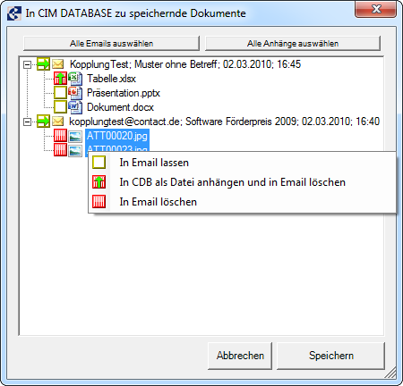

Nachrichten neu im System anlegen¶
Die Neuanlage einer Nachricht aus Outlook im System geschieht allgemein in folgenden Schritten:
Wählen Sie die zu archivierenden Nachrichten aus indem Sie sie markieren.
Bemerkung
Die [ Email/Anhang neu anlegen ] -Schaltfläche wird aktiviert, wenn mindestens eine Nachricht markiert ist. Es können also auch mehrere Elemente gleichzeitig markiert und angelegt werden.
Klicken Sie auf die aktivierte Schaltfläche [ Email/Anhang neu anlegen ] .
Es wird nach einer bereits laufenden CIM Database/WIN-Instanz gesucht. Sollte kein CIM Database/WIN gestartet sein, so wird automatisch versucht, eine neue Programminstanz zu öffnen.
Bemerkung
Es wird grundsätzlich empfohlen, im Vorfeld bereits eine Instanz von CIM Database/WIN zu starten, bevor mit Archivierungsvorgängen begonnen wird.
Durch das Drücken der [ Email/Anhang neu anlegen ] -Schaltfläche erscheint ein Auswahldialog. Dieser Dialog bietet Optionen an, anhand derer die selektierten Nachrichten archiviert werden sollen. Im Email-Knoten sind nochmals Absender, Betreff, Datum und Uhrzeit mit angegeben. Wenn die zu archivierende Nachricht Anlagen enthält, dann werden diese in der Tabelle des Dialoges untergeordnet mitaufgelistet.
Wichtig
Nachrichten die keine Anlagen enthalten, werden nicht im Auswahldialog aufgelistet. Sie werden gemäß der Standardaktion für Emails von der System-Integration gehandhabt (siehe Einstellungsdialog). Falls keine der selektierten Nachrichten Anhänge enthält, dann wird der Auswahldialog übersprungen.
Outlook: Nachrichten mit Anlagen im Archivierungsauswahldialog
Dieser Dialog bittet die Möglichkeit sich zu entscheiden, ob die Anlagen einer Nachricht aus der Nachricht extrahiert, d.h. separat im System neu angelegt werden sollen.
Der Benutzer hat die Möglichkeit, die Elemente in der Dialogtabelle zu selektieren. Dabei ist es möglich, ein oder mehrere Elemente auszuwählen. Ebenso können die sich am oberen Rand des Dialogs befindlichen Steuerelemente [ Alle Emails auswählen ] und [ Alle Anhänge auswählen ] benutzt werden, falls der Benutzer eine Aktion für jeweils alle Emails oder Anhänge auswählen/ändern möchte. Geändert werden die Aktionen entweder durch einfaches Klicken mit der Maus auf das Aktions-Symbol, oder durch das Kontextmenü, welches erscheint sobald man mit der rechten Maustaste auf eine Auswahlmarkierung klickt.
Bemerkung
Das Extrahieren/Löschen der Anlagen wirkt sich ausschließlich auf die im System zu archivierende Nachrichtenkopie aus. Die originale Nachricht in Outlook bleibt dabei unverändert, es sei denn, der Benutzer wählt für die jeweilige Nachricht die Option, sie nach dem Archivierungsvorgang automatisch in Outlook zu löschen.
Bemerkung
Falls für Emails oder Anhänge immer die gleiche Aktion ausgeführt wird, kann dies für ein schnelleres Arbeiten im Einstellungsdialog vorkonfiguriert werden. Dort kann der Auswahldialog zudem gänzlich deaktiviert werden (siehe OfficeLink Administrationshandbuch). In HTML-Emails verwendete Bilder werden unabhängig von den Einstellungen mit der Standardaktion “In Email lassen” vorbelegt.
Bemerkung
Grau dargestellte Anhänge stellen in die Email eingebettete Objekte dar. Für diese Anhänge kann ausschließlich die Aktion “In Email lassen” verwendet werden. Eine Auswahl der Aktion ist nicht möglich. Beispiel: Bilder in einer Email im Rich Text Format (RTF).
Nach der getroffenen Auswahl, wird der Dialog über die Schaltfläche [ Speichern ] bestätigt. Dann erscheint für jede zu archivierende Datei (Nachricht/Anlage) die Dokumentneuanlagemaske im System. Die einzelnen Felder der Neuanlagemaske sind entsprechend der Konfiguration vorbelegt. Die ursprünglichen Masken-Standardeinstellungen werden dabei mit den konfigurierten Werten überschrieben. Jede Maske ist anschließend durch den Benutzer, mit den jeweils notwendigen Parametern ergänzend, zu attributieren und zu bestätigen. Falls Anhänge nicht als Dokumente angelegt, sondern in CIM Database/WIN als Dateien an die Mail-Dokumente gehängt werden, wird die Neuanlagemaske für diese Dateien automatisch ausgefüllt und übersprungen.
Bemerkung
Je nach getroffenen Einstellungen werden gegebenenfalls die Anlagen aus der zu archivierenden Nachricht extrahiert und/oder die Originalnachricht in Outlook abschließend automatisch gelöscht.